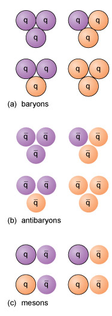

4 Hadrons¶
As well as the leptons and quarks, there is another quite different group in the mix - hadrons! Perhaps the most familiar and even intuitive class of particles. A hadron is a particle which is composed of two of more quarks, a composite particle of which protons and neutrons are examples of. The quarks are held together by the ‘strong force’ (yes, that is what it is called, for hopefully obvious reasons!), much in the same way that the electromagnetic force holds molecules together. This helps explain the name- the word hadron comes from the Greek hadros, meaning ‘strong’ or ‘robust’. This is a good point to briefly introduce the fundamental forces found in nature. In everyday parlance, the word fundamental is often used with reckless abandon, but it has a very particular, important meaning here. These forces are named as such because they cannot be explained due to the action of another force. For example, friction is NOT a fundamental force as it can be explained as occurring as a result of the interaction of the electromagnetic forces in one atom with those in another. Table 3 shows a summary of their key properties and they are listed in order of strength with the strongest at the top. Notice how weak gravity really is! And it’s just as well, it would be awfully difficult to lift your foot up if it wasn’t!
Force | Experienced by | Range (m)(distance between 2 objects before force becomes negligible) | Strength(relative to EM force) |
|---|---|---|---|
Strong | Quarks | 10-15 | 100 |
Electromagnetic | Charged particles | ∞ | 1 |
Weak | Any particle | 10-17 | 10-5 |
Gravitation | Any particle with a mass | ∞ | 10-38 |
Although the only hadrons existing in the everyday world are protons and neutrons, many more types of hadron can be created in high-energy particle collisions. Such reactions are common in the upper atmosphere where high-energy protons from outer space (known as cosmic rays) collide with nuclei of nitrogen and oxygen, smashing them apart and creating new hadrons. Since the 1960s, such reactions have been closely studied in laboratories such as CERN (the European Organization for Nuclear Research), where high-energy beams of particles are smashed together.
Although many dozens of different types of hadron may be created in this way, all of the new ones are unstable and rapidly decay into other, long-lived particles, such as leptons, protons and neutrons. Fortunately, it’s not necessary to dwell on (let alone remember) the names and properties of all the types of hadron, because there is a straightforward description for building them from particles that are believed to be fundamental, namely from quarks and antiquarks.
4.1 Building a hadron¶
Quarks and antiquarks only occur bound together inside hadrons; they have never been observed in isolation. While it may seem like the process of ‘building’ a hadron would be something very complicated (and yes, the underlying physics is indeed complex), there are in fact 3 simple ‘recipes’ to remember.
A hadron can consist of either:
Three quarks (in which case it is called a baryon).
Three antiquarks (in which case it is called an antibaryon).
One quark and one antiquark (in which case it is called a meson).

Figure 2 The three recipes for building hadrons from quarks. Quarks and antiquarks with a charge of two-thirds that of a proton or electron are shown in purple, and those with a charge of one-third that of a proton or electron are shown in orange. The symbol q represents a quark, and q¯ represents an antiquark. Possible combinations of quarks making (a) a baryon, (b) an antibaryon, and (c) a meson are shown.
Activity 1 The quark fruit machine¶
Timing: Allow approximately 30 minutes
Question¶
In this activity, you will play on a ‘fruit machine’ to investigate the combinations of quarks and antiquarks that make up different baryons, antibaryons and mesons. Read the introduction and then click on the tabs to answer questions relating to each type of hadron within the fruit machine. Finish by reading the summary.
Any combination of quarks and antiquarks that obeys one of the three recipes above is a valid hadron. The net electric charge of a hadron is simply the sum of the electric charges of the quarks or antiquarks of which it is composed. As you saw in the activity, the net charge of a hadron is therefore always a whole number, despite the fact that the quarks themselves have non-whole number electric charge.
As a specific example of the hadron-building recipe, the proton is a baryon, so it is composed of three quarks, and as mentioned above, it is composed of up and down quarks only.
The proton has a charge of +e. The only way that three up or down quarks can be combined to make this net charge is by combining two up quarks with a down quark. So the quark content of a proton is (uud), giving a net charge of +2e3+2e3−e3=+e.
Question¶
What is the antiquark composition and charge of an antiproton?
Answer¶
An antiproton has a similar composition to a proton but is composed of antiquarks rather than quarks. Its composition is therefore (uud¯) giving a net charge of −2e3−2e3+e3=−e.
Question¶
What combination of three up or down quarks would make a neutron?
Answer¶
A neutron has zero charge and is composed of three up or down quarks, so its quark content must be (udd), giving a net charge of +2e3−e3−e3=0.
Question¶
Pions are the least massive examples of mesons. They are composed of only up or down quarks and antiquarks. What do you suppose are the compositions of the following pions: π+, π−, π0? (The superscript indicates the electric charge in each case).
Answer¶
π+ must be composed of (ud¯) giving a net charge of +2e3+e3=+e.
π− must be composed of (du¯) giving a net charge of −e3−2e3=−e.
π0 could be composed of (uu¯) or (dd¯) giving a net charge of +2e3−2e3=0 or −e3+e3=0. (In fact neutral pions exist with either composition.) The tally of six leptons and six quarks, each with their own antiparticles, may seem like a huge number of fundamental particles, but don’t let this put you off. Virtually everything in the Universe is made up of merely the first generation of each type of particle (see Tables 1 and 2), namely:
electrons
up quarks, and
down quarks,
with electron neutrinos being created in radioactive decays.
As for the other generations:
the second generation of leptons (muon and muon neutrino)
the second generation of quarks (charm and strange)
the third generation of leptons (tauon and tauon neutrino), and
the third generation of quarks (top and bottom)
all have exactly the same properties as their first-generation counterparts except that they are more massive.
Quite why nature decided to repeat this invention three times over is not currently understood!